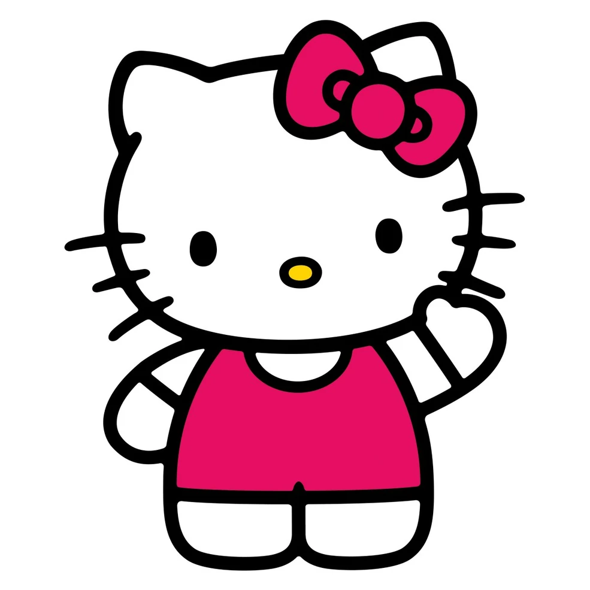

Heyyyyy Therrreee!!
The hand has become increasingly less present in the web as we know it today. Most websites today are built from templates on website-building platforms, and the knowledge of how to make a website from scratch is relegated to a select few. It has only grown easier to learn how to make websites, but the perceived requirements and expectations for a website have become so convoluted and arcane that many avoid the subject.
This course seeks to dispel these ideas and will emphasize the hand-quality of websites by developing an understanding of the best practices, language, history, and present context of the web. We will examine the space of the web at large and explore and challenge what a website is and can be with the hopes of reclaiming an important creative space.
Japan's Most Popular Sanrio Characters
My Top 3 Sanrio Characters
